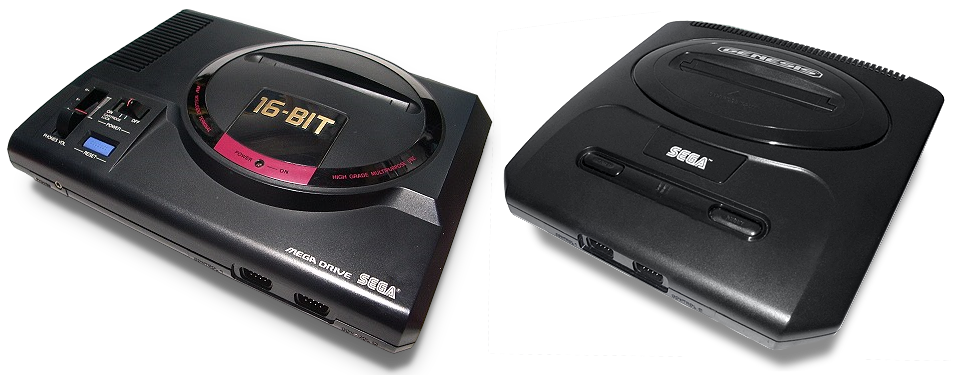

Mega Drive / Genesis

Стационарная консоль Sega четвёртого поколения.
История
Разрабатываемая консоль была анонсирована в японском игровом журнале Beep!, где была обозначена под заголовком Mark V, однако руководство компании Sega посчитало, что в данном случае необходимо более сильное имя.
Рассмотрев более 300 вариантов, компания остановилась на названии Mega Drive. В США название консоли было изменено на Genesis.
Авторы статьи «Sega Mega Drive» — Википедия, CC BY-SA 4.0.
Характеристики
- Производитель
- Sega
- Тип
- Стационарная консоль
- Поколение
- 4-е
- Год выпуска
- 1988
- Тип носителя
- Картридж
- Стартовая цена в США (1989)
- ≈ 189 $
- Цена в долларах 2025 года
- ≈ 491 $